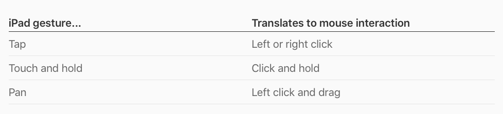
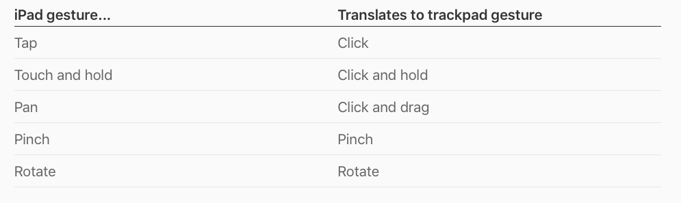
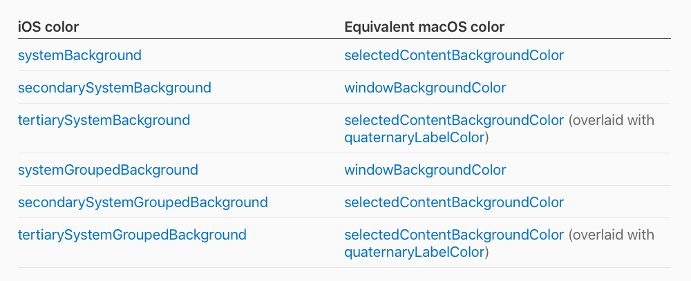

当你把你的 iPad 上打造的 app 带到 Mac 中去时，你就给了人们一个机会可以在具备宽大的屏幕、杰出的原生表现和充足的本地存储的 Mac 上享受你的 app。
目录
- 目录
- 开始之前的准备
- 针对 Mac app 考虑一些增强功能
- 适配 macOS app 结构和导航惯例
- 支持 macOS 的用户交互
- 把 app 的所有命令放到菜单中去
- 视觉设计考量
- 偏好
- 继续阅读
- 参考链接
开始之前的准备
大多数的 iPad app 都适合这种改造，但是一些依赖 Mac 上没有的 iPad 功能的 app 可能就会有些问题。例如，如果你的 app 的核心功能是需要 iPad 的陀螺仪、加速剂或者是后置摄像头，亦或是想 HeathKIt、ARKit 这种 iOS 框架，又或者是 app 的主要功能是一些有关导航的事情，那这种 app 就不适合 Mac。
对于那些没有要求只在 iPad 上才有的功能的 app，确保你的 app 可以良好运行在 Mac 上的最佳方法就是确保这些 app 也可以在 iPad 上运行良好。特别地，你的 app 应该：
- 支持多任务功能（multitasking）：那些运行良好的 app 在 iPad 上都会支持 Split View、Slide Over、Picture in Picture 功能以改变界面的大小，对这些功能的支持也使得 app 能够接近 Mac 用户期待的窗口可以随意调整大小的终极目标。
- 支持拖放（drag and drop）：当你在你的 iPad app 上支持拖放功能时，你的 app 就在 Mac 上自动获得了这项功能。
- 可以对键盘快捷方式，包括 macOS 通用的键盘快捷方式作出响应：即使一个键盘并不总是能操控你的 iPad app，但 iOS 和 macOS 用户会很希望使用键盘快捷方式来提供与 app 交互的效率。
针对 Mac app 考虑一些增强功能
当你使用 Mac Catalyst 去为 macOS 构建 iPad app 时，你可以自动获得 Mac 基础功能的支持，例如：
- 系统偏好设置；
- 键盘、触控板、鼠标和触控栏的输入，包括按键对焦和键盘导航；
- 窗口管理；
- 富文本交互，包括复制、粘贴、情景化编辑菜单；
- 文件管理。
额外的，许多系统提供的 UI 元素会从 iOS 自动地转移到 macOS。例如，你可以获得下面这些 iOS 项目的适合的 macOS 版本：
- Split view 分隔视图
- File browser 文件浏览器
- Activity view 活动视图
- Form sheet 表单
- Contextual actions 情景化操作
为了确保你的 app 可以给用户一个丰富的 Mac 使用体验，增强这些基础，不仅仅是简单地在 macOS 窗口中展示 iOS UI 是非常重要的。在你深入下去更新这些特定的视图和控件之前，先熟悉平台之间的主要不同点，这样你就可以在 Mac 上创造十分合适的 app。
iOS 和 macOS 系统都根据用户使用设备的不同方式分别定义了设计模式和用户交互的惯例。例如，在 iOS 上有轻扫删除的管理，有在手持设备上为触摸屏最优化的 action sheet 命令和控件都会出现在屏幕底部的惯例。相似的，在 macOS 上有键盘快捷方式的惯例，有为键盘、鼠标、触控板交互和单独显示器最优化的菜单命令和控件都会出现在窗口顶部的惯例。
这些对适配有着最大影响的惯例和设计模式可以归纳为下面四个核心区域：
- 导航：许多 iOS 和 macOS 的 app 通过相似的方式组织数据，但它们使用不同的控件和视觉标记帮助人们理解和在数据间导航。
- 用户输入和交互：虽然 iPad 和 Mac 都可以通过许多设备接收输入信息，例如屏幕多点触控、键盘、鼠标、触控板，但是可触摸的交互形成了 iOS 的惯例，而键盘和鼠标的交互形成了 macOS 的惯例。
- 菜单：Mac 用户对常驻的菜单栏非常熟悉，并且期望在菜单栏的菜单中找到所有的 app 命令。另一方面，iOS 并没有一个常驻的菜单栏，iOS 用户只会在 app 的 UI 中找到 app 的命令。
- 内容大小：在 iPad app 的 macOS 版本中的文本看上去会跟 iOS 一样，因为 SF 字体可以在所有的平台上使用。然而，在 iOS 上的基线字体尺寸是 17pt，而在 macOS 上最通用的字体尺寸是 13pt。为了确保你的 app 的文本和交互元素可以与 macOS 环境一致，iOS 视图会自动缩小到原来的 77%。
除了适配 macOS 的交互和设计惯例，你还需要更新你的 app 的视觉设计和布局以利用好 Mac 更宽大的屏幕，并给 macOS 用户一个良好的使用体验。例如，你可能需要：
- 把一列内容或者操作变成多列；
- 在主要内容旁边展示一个查看器 UI，而不是一个 popover；
- 同步展示你的 app 层级中的两个层级或者更多层级。
理想情况下，从 macOS 设计惯例的角度查看 iPad app 也是一种改进 iOS 版本的方法。如果你想确保每一个版本都能与它的平台惯例保持正确，那就用这个机会重新审查你的 app 的设计。特别是如果你的 iPad app 是从 iPhone app 发展而来的，重新仔细考虑你放置视图和控件的方法，看看这里是不是有地方可以更好地利用好 iPad 的大屏幕。
适配 macOS app 结构和导航惯例
设计良好的 app 导航通过遵循平台的惯例反映数据的结构，为 app 的首要目标提供支持。为了帮助 macOS 用户在使用你的 app 时不会陌生，你需要把 iOS 的导航惯例翻译成 macOS 的等价惯例。
大多数的 iPad app 使用扁平的导航或者层级导航，有些 app 两种组合使用。扁平导航把功能区域或者数据分类作为同一等级的组展示，它们每一组都是始终可用的。例如，「音乐」和「应用商店」app 使用了扁平导航让用户可以始终访问最高层级的区域，例如资料库、为你推荐、浏览、今天、游戏。层级导航把信息以树状结构呈现，用户通过在每个视图中选择一个条目，直到抵达目的地。例如，在设置中人们可以通过「通用」→「键盘」→「文本替换」来自定义文本替换。
通常情况下，iPad app 使用下面这些 UIKit 控件来实现导航：
- Tab bar 标签栏：Tab bar 通过在屏幕底部的 bar 上始终展示一个最高层级的目录来支持扁平导航；
- Page control 页码控件：一个 page control 通过在屏幕底部展示一系列的圆点来表明在多个扁平页面组成的列表中当前页面的位置。
- Split view 分隔视图：一个 split view 可以通过在一级视图（或者叫主视图 master view）和二级视图（或者叫详情视图 detail view）展示条目或者功能来实现层级导航。当人们在一级视图中选择一个条目，分隔视图就可以在二级视图中展示与这个条目相关联的内容。
将 iOS 上的 tab bar 转化成 macOS 的控件时需注意：
- 如果你在 iPad app 中使用了 tab bar，考虑使用一个 segmented control 分段控件或者在一个分隔视图控制器中使用边栏背景样式：这两种样式与 Mac 上的窗口样式有着相似的导航惯例。为了在这些条目中选择，考虑下面这些要点：
- 一个分段控件和一个标签栏可以提供相似的交互，例如互相排斥的选择，所以一个分段控件可以作为直接适配的替换选择。一个分段控件对于在每个 tab 中没有很多层级的 iPad app 是理想的，因为它可以在一个 tab 中与一个边栏搭配发挥导航的作用。
- 一个边栏展示了一个顶级条目的列表，每一个条目可以包括一个子条目的列表。使用边栏可以让导航更流畅，因为你可以让用户在边栏中看到每个 tab 的内容。边栏对于展示不会经常改变的 app 特定的或者用户特定的分类是一个好的选择。例如，在「News」 app 的边栏中，即使人们可以改变每个分类列出的条目，但「订阅中」和「建议」分类就不会经常改变。
- 你也可以在 app 中把分段控件和边栏组合使用。例如，你可能需要分段控件去容纳 tab，需要边栏去展示每个 tab 的内容。不管你怎么适配你的 tab bar，确保让用户可以通过 macOS 的查看菜单内，快速访问每个 tab 的内容。
将 iOS 上的 split view 转化成 macOS 的控件时需注意：
- 如果你在 iPad app 上使用了分隔视图，macOS 会自动将其转化成 Mac 版本的分隔视图：在两个平台上，主视图是呈现各种条目列表的好选择，例如在「邮件」应用中的邮箱列表，因为它可以既包含文本又包含图标，还支持排序和过滤功能。然而，如果你的内容层级超过两个层级，在主视图和当前详情视图之间的中间层级就会在 Mac 样式的窗口中看不见。为了确保人们可以沿路径返回，在工具栏上要包括一个后退按钮。
将 iOS 上的 page control 转化成 macOS 的控件时需注意：
- 如果你通过使用页码控件或者另一种方式来实现横向导航，给用户一个特定的控件可以查看页面：如果你支持这种样式的水平导航，你可以在 Mac 样式的窗口中通过在工具栏上展示一个「下一页/上一页」按钮或者在菜单栏的菜单中添加导航命令来帮助人们在页面间导航。例如，macOS 上的「股票」应用既在工具栏上展示了一个后退按钮，也在查看菜单中展示了下一个和上一个命令。
对于多窗口要注意的点：
- 如果你在你的 iPad app 中支持多窗口功能，那在 macOS 的版本中也会获得多窗口功能的支持。另外，许多 macOS app 让人们可以在新 tab 中打开新的文档或其他内容，而不是在新窗口中打开。例如，人们可以在 Safari 的窗口中的每个 tab 中打开不同的网页，在一个 Finder 窗口中的每个 tab 中打开不同系统路径的文件系统。当人们使用系统偏好设置去设定更喜欢 tab 而不是窗口时，系统会把相关的菜单条目动态地添加到 app 的菜单中去，例如「视图」→「显示标签栏和窗口」→「显示下一个标签」。
支持 macOS 的用户交互
「Selection persistence 持续保持选择状态」是 iOS 和 macOS 用户交互的基本不同。因为许多 macOS 用户期望只通过使用键盘来控制 app 和系统，对象的选择状态必须一直保持，人们才可以通过一连串的键盘敲击去选择一个对象，再通过一连串的敲击去执行对象。相对比的，iOS 用户期望执行一个对象时不需要选中它，所以对象没有必要一直保持选中状态。众所周知，iOS app 并不是为最优化的键盘交互而生的。
这里有一些方式，在这些方式中不同的交互惯例会影响用户体验：
- macOS 用户总是会想要「下一个」和「上一个」按钮来取代 iPad或者触控板的手势，例如在页面之间轻扫。
- 在一个 Mac 上，人们期望使用删除键和在菜单中选择删除命令，所以在 UI 中展示一个删除按钮通常是没必要的。
- iOS 用户习惯于下拉页面刷新内容，相比的，Mac 用户期望使用一个菜单命令，例如「检查新内容」。
当你把 iPad 的用户交互模式翻译成 Mac 的交互时，将聚焦点放在让用户通过遵循平台惯例的方式操作对象上。
键盘输入
为支持键盘惯例做好准备，让用户可以通过使用方向按键或者按一个字母/数字按键来改变选择对象。
如果在你的 app 中可以实现，那就利用好 Mac 用户可以同时轻松使用键盘和鼠标或者触控板这一事实。
如果你在你的 iPad app 中通过实现 UIKeyCommand 去定义命令的键盘快捷方式，你 app 的 macOS 版本会把这些快捷方式翻译成菜单。例如，你应该把每一个主要的内容显示区域都映射成键盘快捷方式，例如每一个 tab 的键盘快捷方式就是「⌘1」、「⌘2」……并把这些快捷方式展示在你 app 的 macOS 版本中的查看菜单中。
如果在你的 iPad app 的 UI 中有一个删除按钮，那就考虑从 macOS 版本中移除这个按钮，让用户可以通过删除按键或者「编辑」→「删除」菜单完成删除操作。
手势
当你的 iPad app 运行在 macOS 上时，大多数的手势可以被自动转换，例如：


注意：在 pinch 和 rotate 手势中的两个触摸点会被传送给光标下面的视图，而不是每个触摸点下面的视图。
把 app 的所有命令放到菜单中去
在一个 Mac 上，屏幕顶部的菜单栏可以让那些控制 app 和系统的命令给用户一个始终如一的位置。除了 Apple 菜单列出的总是可用的系统层级的命令，菜单栏还包含由当前 app 提供的标准菜单和自定义菜单。Mac 用户期望每一个 macOS app 可以在菜单栏中显示所有的命令。
开发手记：你必须使用 UICommand 去代表 iPad app 上的每一个命令，因此这些命令才会被放进 macOS 的菜单栏的菜单中。为了让命令支持键盘快捷方式，使用 UIKeyCommand。
因为 iPad app 在主要的 UI 中使用控件去展示命令，为每一个 app 的命令找到一个有逻辑的、直观的菜单栏位置是适配过程的核心部分。
为了设计你的 macOS 版本的 app 的菜单栏菜单，从列出人们可以执行的所有动作开始，并把它们根据标准菜单栏菜单定义的分类分组。例如：
- app 名字；
- 文件 File；
- 编辑 Edit；
- 查看 View；
- 窗口 Window；
- 帮助 Help。
注意：大多数的 macOS app 都包含「查看」和「窗口」菜单。虽然这俩菜单会有些相似，但是它们都有不同的目的。人们使用「查看」菜单去自定义 app 窗口的外观、在不同的功能区域之间移动；使用「窗口」菜单在 app 中的一系列窗口间导航、组织和管理这些窗口。
如果你的清单中某些动作放在标准菜单栏中的菜单中讲不通的话，你可能需要添加一个自定义菜单。Mac app 总是会为那些与核心 app 对象或者核心 app 工作流相关联的命令添加一个自定义菜单栏菜单。例如，在 macOS 中的「邮件」app 中，使用了「信息」和「邮箱」菜单列出了那些操作 app 基础对象的命令。同样的，「Keynote」app 使用了「排列」菜单列出了在幻灯片上与排列对象核心工作流相关的所有命令。
在你把 app 的所有动作都分组到菜单中后，你需要用一种讲得清楚的方法在每个菜单中排列这些动作。每一个标准菜单都定义了一个推荐动作排序，所以对你支持的动作按照这个顺序排列非常重要。例如，Mac 用户期望「文件」菜单会按下面这个顺序呈现：
- 新建…
- 打开…
- 打开最近的文档
- 关闭
在一个自定义菜单栏的菜单中，你应该根据重要性、使用频率或者你 app 中讲得清楚的其他机制排序这些动作。菜单栏菜单也可能包含子菜单和分隔线，以让动作按逻辑方式被分组。
当然，对于你的菜单中所有的常见命令支持键盘快捷方式也很重要，这样使用键盘的 Mac 用户和 iPad 用户都可以从中受益。除了为标准菜单条目创建键盘快捷方式，你也可以为自定义条目创建快捷方式。
情景化菜单
情景化菜单可以帮助人们发现那些不需要打开菜单栏菜单就能在某个对象上执行的动作。如果你在 iPad app 上支持情景化菜单，系统会自动把它们转化为 macOS 版本的情景化菜单。
为了给 Mac 用户创造最佳用户体验，为支持情景化菜单寻找额外的空间。例如，如果人们可以在 app 中对一个对象执行一些常用的动作，那就添加一个列出这些动作的情景化菜单。你也可以对代表一个对象的视图添加情景化菜单，例如，在「Finder」中的文件夹对象就支持情景化菜单，其提供了像是「在新标签中打开」、「重命名」、「复制」这些动作。
视觉设计考量
当运行到 macOS 上时，为了让你的 iPad app 也会看起来运行良好，仔细在下面这些视觉设计领域考虑平台间的不同。
布局
Mac 用户期望将 app 的窗口大小从全屏一直调整到 app 允许的最小尺寸。为了支持这种无限可调整大小的类型，也是为了利用好 Mac 宽带的屏幕，那就使用「regular width」和「regular height」的 size class 尺寸等级，必要时考虑把窗口内容区域中的元素重新排列成并排排列。
- 尽可能地适配一个从上到下的布局：macOS app 会把最重要的动作和内容放到靠近窗口顶部的地方。如果你的 iPad app 在工具栏或者导航栏上有控件，那么把这些控件放到 app 的 macOS 版本中的窗口工具栏上。
- 考虑把 iPad app 主要 UI 中的控件移动到 macOS 窗口中的工具栏上：当然，也把与这些控件相关联的命令列在 macOS app 的菜单栏的菜单中。
- 特别注意：在 macOS 中，工具栏上的按钮总是可见的，但当前的情景可能使这些按钮不可用。而在 iOS 中，工具栏上的按钮总是可用的，但当前情景可能没有工具栏。例如，如果你的 iPad app 只在一个 tab 中有工具栏按钮，那 macOS 版本的 app 中应在其他的 app 中也展示这个按钮，只不过要将其设置为不可用状态。为了避免让用户疑惑，在工具栏上使用一个「齿轮」按钮会更好，因为在尺寸按钮的菜单中的条目会根据当前 app 的选择发生变化。
- 从屏幕左边或者右边，重新放置按钮：在 iPad 上，把按钮放在屏幕的居中靠左或者居中靠右的位置上会帮助用户可以更容易点击，但是在 Mac 上，工程效率学的考虑不需要了。你可能想要把控件重新放在内容区域的顶部或底部，抑或是放在你 macOS app 窗口的工具栏上。
颜色
- 在两个平台上使用系统的选中颜色：通常情况下，iOS 用颜色去给按钮描边着色、表明被选中状态，但是在 macOS 中，人们期望使用系统偏好设置去选择他们想要的被选中颜色和按钮颜色。
为 iOS 背景所设计的动态系统颜色会自动映射成合适的 macOS 等价颜色，如下表所示：

其他定义的语义化颜色，如系统颜色、文字标签颜色、分隔线颜色，会映射到相似名字的 macOS 颜色。
- 不要在 tab rows 中给按钮着色：在你的 iPad app 中，你会通过着色表明那个在 tab rows 中的按钮是活跃状态，但是在 macOS 中，在 tab rows 中被着色的按钮会看上去不到位不合适。
文字排版
虽然系统提供的自动缩放功能可以让你在所有的平台上不需要指定不同的字体大小值，这个功能一般都有一个不错的结果，但在每一种情况下你可能不会得到最好的结果。
- 确保 small 类型在 Mac 上是可读的：为在 iPad 上使用的一些最小字体尺寸做出增加做好准备，在 macOS 上的所有文本都应该保持可读性。当然，需要注意在 macOS 上不支持动态类型。
自定义图标和图形
- 创建一个 macOS 版本的 app 图标：好的 macOS app 图标明显与好的 iOS app 图标不同。例如，macOS app 图标可以是非矩形形状，图标可以被歪曲或者旋转。默认情况下，macOS 会在 iOS app 的图标上增加一层投影，让其在 Mac 上更合适，但是最好是设计一个特定的 Mac app 图标。
- 如果有必要的话，创建平台特定的图形：如果你的 iPad app 使用了以某种方式提及了操作平台的自定义图形，那就需要创造一个新的适合于 Mac 的图形。Xcode 提供了一个分离的资源目录，你可以在 iPad app 中使用它存放特定的 macOS 图形。
偏好
如果你的 app 在 iOS 的「设置」中提供了 app 的设置选项，macOS 会自动在 app Mac 版本的偏好设置窗口中显示这些选项。默认情况下，macOS 会在偏好设置窗口中为 iOS 设置中的每个条目添加一个工具栏按钮，所以要给这些条目匹配一个标准的系统偏好设置按钮和标题。
正如 Mac 用户所期望的，当用户在你 app 的菜单中选择「偏好设置」菜单时你的偏好设置窗口就会出现。然而，这里有一些方法可以改进 app 设置条目的展示，让 app 的偏好设置体验更像 Mac：
- 自定义每个条目的工具栏图标：因为 macOS 会对你的 app 的设置条目自动使用标准的系统偏好设置图标，人们就必须阅读每个工具栏按钮的标题以区分多个条目。为了改进这个体验，为每个设置条目提供一个自定义的图标。
- 让macOS 用户更容易理解开关控件：不像 iPad app，当用户在系统偏好设置中使用一个开关做出改变时，一个 macOS app 总是会展示一个确认弹窗。另外，在 iOS 设置中的开关可以展示一小部分的文本信息以告诉用户这个开关会如何影响用户体验。在 app 的 Mac 版本中，你可以与 macOS 开关一起提供一段简短的描述，你可以在用户使用开关改变设置时在确认弹窗中指定一段内容去展示。
继续阅读
本篇文章主要取材于 iOS HIG，从大的层面讲述了移植 app 到 Mac 中去的一些设计规范，点击这里继续阅读把 iPad 上的 app 带到 Mac 中去（下），下篇取材于 WWDC session，将用更多的示例和图片主要围绕架构、工具栏、布局、排版、颜色、手势、触控栏、app 图标、情景化菜单、菜单栏菜单十个部分讲述更多移植的细节。
参考链接
- iPad Apps for Mac - iOS - Human Interface Guidelines - Apple Developer
- Designing iPad Apps for Mac - WWDC 2019 - Videos - Apple Developer
如果你觉得这篇文章对你有所帮助，欢迎请我喝杯咖啡，感谢你的支持😁